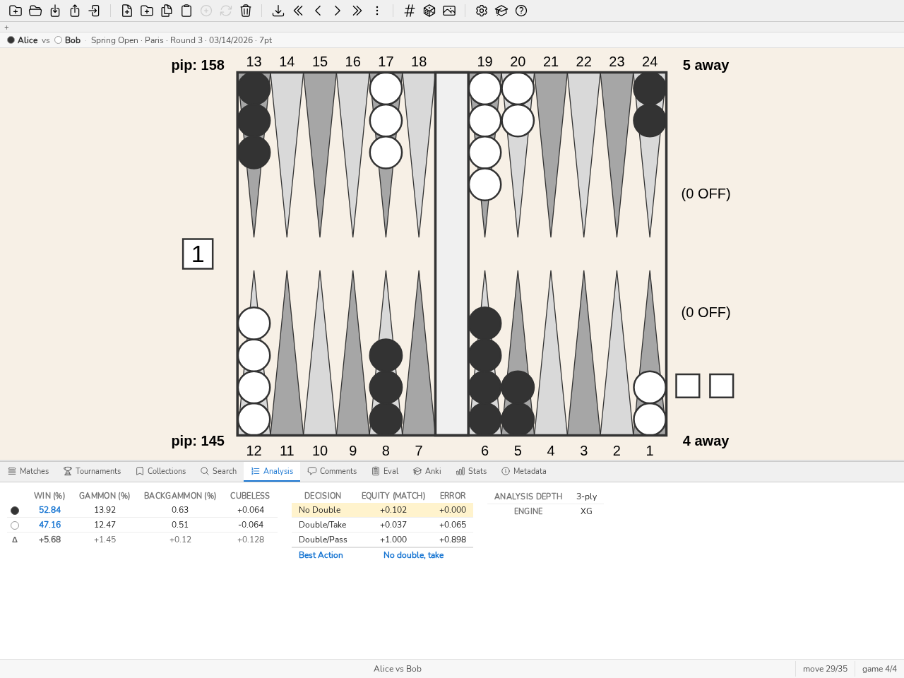

Benutzerhandbuch
Dieser Leitfaden ist eine praktische Einführung in blunderDB für einen schnellen Einstieg. Vier durchgängige Tutorials decken die häufigsten Anwendungsfälle ab; der Rest des Leitfadens bleibt ein Referenzkatalog, Handgriff für Handgriff, bei Bedarf nachzuschlagen.
Der Startbildschirm
Solange keine Datenbank offen ist, bietet blunderDB vier Wege statt eines leeren Bretts:
Meine Matches importieren — der Hauptweg. Er verkettet sich von selbst: eine neue Datenbank, die Auswahl Ihrer Dateien (XG, GNU Backgammon, Jellyfish, BGBlitz), dann der Importbericht — „hier ist Ihr PR und Ihre schlimmsten Entscheidungen“ — und, wenn Sie mögen, die Studienliste. Das Versprechen des Werkzeugs in zwei Minuten eingelöst, statt erklärt.
Beispieldatenbank öffnen — drei Matches, Sammlungen, Kommentare und ein Anki-Stapel: genug, um alles auszuprobieren, ohne etwas mitzubringen.
Geführte Tour — ein Rundgang durch die Oberfläche, Panel für Panel.
Datenbank öffnen — eine
.db-Datei, die Sie schon haben.
Die zuletzt geöffnete Datenbank wird gesondert angeboten, und nur wenn ihre Datei noch existiert: eine Schaltfläche, die beim Klicken scheitert, ist schlimmer als keine.
Der Bildschirm verschwindet, sobald eine Datenbank offen ist. Ein dezenter Link blendet ihn für die Sitzung aus, denn das Eval-Panel funktioniert ohne Datenbank: man kann eine Stellung aufbauen und bewerten wollen, ohne etwas zu öffnen.
Durchgängige Tutorials
Mein erster Import
Dieses Tutorial geht von einer eXtreme-Gammon-Matchdatei (.xg) aus und endet bei der Liste der Stellungen, bei denen Sie am meisten verloren haben.
Datenbank anlegen. Schaltfläche Neue Datenbank in der Werkzeugleiste (oder STRG-N), einen Speicherort und einen Namen wählen; die Endung
.dbwird automatisch hinzugefügt.Match importieren. Die Datei
.xgper Drag & Drop auf das blunderDB-Fenster ziehen (oder STRG-I, dann auswählen). blunderDB erkennt das Format, importiert die Stellungen sowie die bereits in der XG-Datei vorhandene Analyse (Züge, Würfelbecher-Entscheidungen, Markierungen) und zeigt bei erfolgreichem Import das Matches-Panel an.Bemerkung
blunderDB übernimmt die im Match bereits vorhandene Analyse, es erstellt keine neue: Ein in XG nie analysiertes Match hat also keinen Fehler zu zeigen. Ist das Kästchen Nach Import automatisch analysieren aktiviert (Konfigurationsfenster, Reiter gammonNet), füllt ein begrenzter, abbrechbarer Analyse-Stapel im Hintergrund die Positionen ohne Analyse auf. Siehe Konfiguration.
Match durchsehen. Ein Doppelklick auf die Match-Zeile (oder Auswählen und EINGABE) öffnet die Durchsicht bei der zuletzt besuchten Stellung. Die Tasten LINKS/RECHTS (oder k/j) blättern durch die Züge; Bild auf/Bild ab wechseln die Partie.
Analyse lesen. STRG-L zeigt das Analyse-Panel: die besten Züge, ihre Äquität und der Fehler des gespielten Zugs (in der Tabelle hervorgehoben). Bei einer Würfelbecher-Entscheidung zeigt dieselbe Taste die Äquitätentabelle des Würfelbechers und das Urteil.

Das Analyse-Panel während der Durchsicht eines Matches: Der gespielte Zug ist in der Tabelle der Kandidatenzüge hervorgehoben.
Größte Fehler finden. Das Stats-Panel öffnen (STRG-D), Reiter Dashboard: Die Liste Top blunders nennt die zehn teuersten Fehler, und ein Klick auf eine Zeile lädt die betreffende Position in das Analyse-Panel. Für Geübte geht es auch über die Tastatur: Der Befehl
bl(oderblunders, LEERTASTE öffnet die Befehlszeile) lädt diese Positionen direkt, ohne eine Suche von Hand aufzubauen. Siehe Stats-Panel, um diese Auswahl nach Spieler oder Datumsbereich zu verfeinern, sobald mehrere Matches importiert sind.
Ein Match studieren
Sobald mehrere Matches importiert sind, beschreibt dieses Tutorial das Studium eines bestimmten Matches — über den einfachen Durchlauf des vorigen Tutorials hinaus.
Matches-Panel öffnen (STRG-Tab). Es listet alle importierten Matches auf, sortierbar nach Spalte (Spieler, Datum, Länge, Turnier, PR). PR und MWC-Kosten sind im Glossar definiert.

Das Matches-Panel: sortierbare Liste, PR und MWC-Kosten pro Match.
Durchsicht öffnen, indem Sie auf die Zeile doppelklicken oder sie auswählen und dann EINGABE drücken. Die Informationsleiste über dem Brett erinnert an beide Spieler, das Turnier und den Spielstand.
Zwischen Steinzug und Würfelbecher-Entscheidung wechseln mit der Taste d auf derselben Stellung, wenn beide Analysen verfügbar sind (eine der beiden kann fehlen, je nachdem, was die importierte Datei enthielt).

Eine Würfelbecher-Entscheidung im Analyse-Panel: Geldäquitäten, Fehler jeder Option, beste Entscheidung.
Kommentieren Sie, was Sie beobachten: STRG-P öffnet das Kommentare-Panel zur angezeigten Stellung — nützlich, um festzuhalten, warum ein Zug ein Blunder ist, nicht nur, dass er es ist.

Das Kommentare-Panel: ein Gesprächsfaden, der an die angezeigte Stellung angehängt ist.
Markieren Sie eine Stellung, um sie später erneut zu spielen: LEERTASTE, um die Befehlszeile zu öffnen,
#gefolgt von einem Stichwort (zum Beispiel#blitz), EINGABE. Siehe Eine Position bearbeiten, um die Stellung direkt zu bearbeiten, wenn der gespielte Zug nicht der ist, den Sie studieren möchten.Match-Modus verlassen mit dem Befehl
m: Die Bibliothek nimmt ihren vorigen Zustand wieder ein, die zuletzt besuchte Stellung des Matches wird für den nächsten Besuch gemerkt.
{kind=link}
Eine Anki-Sitzung
Das Anki-Panel verwandelt eine Sammlung oder eine Suche in ein Kartenpaket zum Wiederholen nach dem FSRS-Algorithmus (verteiltes Wiederholen).
Paket zusammenstellen. Zwei mögliche Ausgangspunkte: eine von Hand ausgewählte Sammlung von Stellungen oder eine Suche (STRG-F) — zum Beispiel alle als fehlerhaft markierten Würfelbecher-Entscheidungen. Der Befehl
bl 30(30 schlimmste Fehler) liefert einen guten Ausgangspunkt für ein erstes Paket.Paket erstellen. Das Anki-Panel öffnen (STRG-K), Schaltfläche Neuer Stapel, das Paket benennen; es synchronisiert sich mit der gewählten Suche oder Sammlung.

Das Anki-Panel: ein Paket pro Zeile, Karten insgesamt, neue und heute fällige.
Wiederholen (Schaltfläche Studieren): Jede Karte zeigt eine Stellung, Sie formulieren Ihre Antwort im Kopf, decken die Lösung auf (das Brett, die Analyse und einen etwaigen Kommentar) und bewerten anschließend Ihre Einschätzung von 1 (verfehlt) bis 4 (leicht). FSRS staffelt die nächste Anzeige entsprechend. Nichts zwingt Sie, die Antwort aufzudecken, um fortzufahren, wenn Sie sich Ihrer Sache sicher sind.
Aufwärmen, ohne den Zeitplan zu stören (Schaltfläche Training): zeigt zufällige Stellungen aus dem Paket, ohne den FSRS-Zeitplan zu berühren — praktisch vor einem Turnier oder um intensiv zu wiederholen, ohne die Fälligkeiten der anderen Karten zu verschieben.
Siehe Anki-Panel für die Parameter im Detail (Sitzung begrenzen, Ziel-Behaltensrate, Paket zurücksetzen).
Servermodus hinter einem Proxy bereitstellen
Der Servermodus (blunderdb serve) stellt die Engine von blunderDB über HTTP + JSON bereit. Er authentifiziert niemanden (ADR-0005): Er vertraut dem Header X-Tenant-ID genau so, wie er ihn empfängt, und muss daher immer hinter einem Reverse-Proxy stehen, der seinerseits authentifiziert und diesen Header selbst setzt. Dieses Tutorial stellt das veröffentlichte Image hinter einem minimalen nginx bereit, mit HTTP-Basic-Authentifizierung für einen einzigen Tenant, und zeigt anschließend, wie jedem Mitglied sein eigener Tenant zugewiesen wird. Das ist der einfachste Ausgangspunkt, anzupassen (SSO, Client-Zertifikate) je nach Ihrem Kontext.
Dienst starten, gebunden an
127.0.0.1(nie direkt exponiert):docker run --rm -p 127.0.0.1:8080:8080 -v blunderdb-data:/data \ -e BLUNDERDB_BACKEND=sqlite -e BLUNDERDB_DSN=/data/blunderdb.db \ ghcr.io/kevung/blunderdb-serve:<version>
Passwortdatei erstellen für die Basic-Authentifizierung:
htpasswd -c /etc/nginx/blunderdb.htpasswd alice
nginx konfigurieren, um zu authentifizieren und dann weiterzuleiten, indem
X-Tenant-IDselbst gesetzt wird — niemals der vom Client gesendete Wert. Ein TLS-Zertifikat ist eine Voraussetzung dieses Tutorials und nicht sein Gegenstand: Besorgen Sie es vorab (Let’s Encrypt mitcertbot, oder die Zertifizierungsstelle Ihrer Organisation) und geben Sie hier seine beiden Dateien an. Port 80 dient nur zur Weiterleitung auf HTTPS.server { listen 80; server_name blunderdb.exemple.org; return 301 https://$host$request_uri; } server { listen 443 ssl; server_name blunderdb.exemple.org; ssl_certificate /etc/letsencrypt/live/blunderdb.exemple.org/fullchain.pem; ssl_certificate_key /etc/letsencrypt/live/blunderdb.exemple.org/privkey.pem; location /v1/ { auth_basic "blunderDB"; auth_basic_user_file /etc/nginx/blunderdb.htpasswd; proxy_set_header X-Tenant-ID ""; proxy_set_header X-Tenant-ID "1"; proxy_pass http://127.0.0.1:8080; } }
Die beiden
proxy_set_headersind in dieser Reihenfolge zu lesen: zuerst den vom Client empfangenen Wert löschen, dann den des Proxys einsetzen.Prüfen mit dem Health-Unterbefehl, der nicht über den Proxy läuft:
docker exec <container> blunderdb healthcheck
Mehrere Mitglieder, je ein Tenant. Der Daemon akzeptiert in
X-Tenant-IDnur eine positive Ganzzahl: Es ist Sache des Proxys, das authentifizierte Konto dieser Ganzzahl zuzuordnen. Ein im Kontexthttpplatziertermap-Block hält diese Zuordnung und fällt für ein nicht gelistetes Konto auf die leere Zeichenkette zurück — niemals auf1:map $remote_user $tenant_id { default ""; alice 1; bob 2; }
Der
location-Block weist ein nicht zugeordnetes Konto dann ausdrücklich zurück, statt es zum Daemon durchzulassen:location /v1/ { auth_basic "blunderDB"; auth_basic_user_file /etc/nginx/blunderdb.htpasswd; if ($tenant_id = "") { return 403; } proxy_set_header X-Tenant-ID ""; proxy_set_header X-Tenant-ID $tenant_id; proxy_pass http://127.0.0.1:8080; }
Ein Tenant pro Mitglied setzt das PostgreSQL-Backend voraus: Bei SQLite, wie in Punkt 1 dieses Tutorials, antwortet der Daemon nur für
X-Tenant-ID: 1und weist jeden anderen Wert zurück. Das Repository liefert dieses vollständige Schema indeploy/nginx-tenant-proxy.confund sein Caddy-Äquivalent indeploy/Caddyfile.
Siehe Headless-Modus (Server) für den vollständigen Funktionsumfang (Routen, Multi-Tenant-PostgreSQL-Backend mit Row-Level Security, Migration von SQLite) und das veröffentlichte Docker-Image.
Demo-Szenario (3 Minuten)
Um blunderDB ohne eigene Datenbank vorzuführen, lädt der Befehl demo eine Beispieldatenbank (fiktive Stellungen und Matches). Das folgende Szenario läuft in drei Minuten ab:
0:00 —
demoauf der Befehlszeile (oder die entsprechende Schaltfläche in der Werkzeugleiste) lädt die Beispieldatenbank. Das Matches-Panel wird angezeigt.0:30 — Ein Match öffnen (Doppelklick), einige Züge mit den Pfeiltasten durchgehen, das Analyse-Panel (STRG-L) bei einem gespielten Zug mit sichtbarem Fehler zeigen.
1:30 — Befehl
bl: Die Ansicht wechselt direkt zu den schlimmsten Fehlern der Datenbank, über alle Stellungen hinweg.2:15 — Anki-Panel (STRG-K): ein Paket aus diesen Stellungen erstellen, eine Karte im Study-Modus starten, um den Zyklus Frage/Antwort/Bewertung zu zeigen.
2:45 — Zurück zum Stats-Panel (STRG-D), Reiter Dashboard, um zu zeigen, wo sich diese Arbeit über die Zeit zeigt.
Eine neue Datenbank anlegen
Um eine neue Datenbank anzulegen, klicken Sie in der Werkzeugleiste auf die Schaltfläche Neue Datenbank. Wählen Sie einen Speicherort und einen Namen für die Datenbank und bestätigen Sie das Speichern im Systemfenster.
Bemerkung
Die Dateiendung der blunderDB-Datenbanken ist .db.
Tipp
Tastenkürzel: CTRL-N. Befehl: n
Eine bestehende Datenbank öffnen
Um eine vorhandene Datenbank zu laden, klicken Sie in der Werkzeugleiste auf die Schaltfläche Datenbank öffnen. Wechseln Sie in den Ordner der Datenbank, wählen Sie die Datei .db und bestätigen Sie das Öffnen im Systemfenster.
Tipp
Tastenkürzel: CTRL-O. Befehl: o
Datenbank zusammenführen
Um eine andere blunderDB-Datenbank in die gerade geöffnete zusammenzuführen, klicken Sie in der Werkzeugleiste auf Datenbank zusammenführen. Wählen Sie die .db-Datei und bestätigen Sie.
Das ist zugleich blunderDBs Antwort auf „wie synchronisiere ich meine Datenbank zwischen zwei Rechnern?“: eine Datenbank ist eine einzige Datei, zwei auseinandergelaufene Datenbanken werden zusammengeführt statt abgeglichen, und die Deduplizierung über den Zobrist-Hash erledigt die Arbeit. Siehe die FAQ, „Kann ich meine Datenbank über mehrere Rechner synchronisieren?“, dafür, was Dateisynchronisationsdienste können und nicht können — und für den Fall, dass mehrere Rechner gleichzeitig arbeiten müssen, der dem Modus serve gehört.
blunderDB führt die beiden Datenbanken intelligent zusammen:
Positionen, die in der aktuellen Datenbank nicht vorhanden sind, werden mit ihren Analysen und Kommentaren hinzugefügt.
Bereits vorhandene Positionen werden aktualisiert: Analysen werden ergänzt, falls sie fehlen, und Kommentare werden zusammengeführt (neue Kommentare werden hinzugefügt, ohne bestehende zu duplizieren).
Eine Meldung fasst die Anzahl der hinzugefügten, zusammengeführten und ignorierten Positionen zusammen.
Eine Zusammenführung ergänzt, sie gleicht nicht ab: nichts wird aus der aktuellen Datenbank entfernt, weil die importierte es nicht enthält.
Bemerkung
Der Import setzt voraus, dass beide Datenbanken kompatible Schemaversionen haben. Es ist möglich, eine Datenbank mit einer niedrigeren oder gleichen Version in eine Datenbank mit einer höheren Version zu importieren.
Vorsicht
Der Importvorgang verändert die aktuell geöffnete Datenbank sofort. Es wird empfohlen, vor dem Import einer anderen Datenbank eine Sicherungskopie anzulegen.
Eine Position bearbeiten
Um eine Position zu bearbeiten, die Taste TAB drücken, um das Suchfenster und den Positionseditor zu öffnen. Die Position mit der Maus bearbeiten:
Auf die Punkte klicken, um Steine hinzuzufügen. Ein Linksklick weist die Steine Spieler 1 zu. Ein Rechtsklick weist die Steine Spieler 2 zu. Um eine Blockade einzufügen, auf den Startpunkt klicken, die Taste gedrückt halten und auf dem Zielpunkt loslassen. Auf die Bar klicken, um Steine auf die Bar zu setzen.
Um die Position zu löschen, doppelt auf eine leere Fläche außerhalb des Boards klicken oder die RÜCKTASTE drücken.
Um den Dopplerwürfel an Spieler 1 zu geben, mit links auf den Dopplerwürfel klicken. Um den Dopplerwürfel an Spieler 2 zu geben, mit rechts auf den Dopplerwürfel klicken.
Um den Spieler anzugeben, der am Zug ist, auf den vorgesehenen Würfelbereich klicken.
Um die Würfel zu bearbeiten, mit links klicken, um den Wert eines Würfels zu erhöhen, mit rechts klicken, um den Wert eines Würfels zu verringern. Wenn die Würfelflächen leer sind, bedeutet dies, dass die Position eine Dopplerentscheidung ist.
Um den Punktestand der Spieler zu bearbeiten, mit links klicken, um den Punktestand zu erhöhen, mit rechts klicken, um den Punktestand zu verringern.
Tipp
Die Eingabe der Position mit der Maus für die Steine erfolgt auf dieselbe Weise wie in XG.
Eine Position zur Datenbank hinzufügen
Nach dem Bearbeiten der Position ist das Suchfenster geöffnet.
Um die zuvor erstellte Position zu speichern, STRG-S drücken oder in der Werkzeugleiste auf die Schaltfläche Position speichern klicken.
Tipp
Die Befehlszeile öffnen und ausführen: w
Eine Position mit einem Tag versehen
Um der aktuellen Position einen Tag toto hinzuzufügen, die Befehlszeile durch Drücken der LEERTASTE öffnen, #toto eingeben und den Befehl durch Drücken der EINGABETASTE bestätigen.
Eine Position löschen
Um die aktuelle Position aus der Datenbank zu löschen, Entf drücken oder in der Werkzeugleiste auf die Schaltfläche Position löschen klicken.
Tipp
In der Befehlszeile d ausführen.
Vorsicht
Vorher wird eine Bestätigung verlangt. Die Löschung findet wirklich statt, aber eine Kopie der Position wird dreißig Tage lang aufbewahrt: siehe Der Papierkorb.
Eine Position aus XG importieren
Um eine Position direkt aus XG zu importieren,
die zu importierende Position in XG anzeigen und CTRL-C drücken,
blunderDB öffnen und CTRL-V drücken.
Bemerkung
Das automatische Einfügen erkennt das Format der Quelle (XG, GNUbg, BGBlitz) sowie die OGID-Kennung von OpenGammon.
Ein Match importieren
blunderDB kann Matches aus verschiedenen Quellen importieren.
Unterstützte Formate:
eXtreme Gammon (XG): Dateien .xg und .xgp (Positionen)
GNUbg: Dateien .sgf
Jellyfish: Dateien .mat und .txt
BGBlitz: Dateien .bgf und .txt
Um eine oder mehrere Match-Dateien zu importieren:
STRG-I drücken oder in der Werkzeugleiste auf die Schaltfläche Position oder Match importieren klicken.
Eine oder mehrere zu importierende Dateien auswählen.
blunderDB erkennt das Format automatisch und importiert das Match.
Ein Fortschrittsfenster zeigt, wie viele Dateien importiert wurden, fehlschlugen und übersprungen wurden (Duplikate), danach einen Importbericht.
Tipp
Befehl: i
Bemerkung
blunderDB erkennt Duplikate automatisch und verhindert den Import eines bereits in der Datenbank vorhandenen Matches.
Einen Ordner mit Matches importieren
Um alle Match-Dateien in einem Ordner und seinen Unterordnern rekursiv zu importieren:
STRG-UMSCHALT-F drücken oder in der Werkzeugleiste auf die entsprechende Schaltfläche klicken.
Den Ordner auswählen, der die Match-Dateien enthält.
blunderDB sammelt und importiert automatisch alle erkannten Dateien (.xg, .xgp, .sgf, .mat, .txt, .bgf).
Der Importbericht
Ein Import endet mit einem Bericht darüber, was er gerade gebracht hat, und nicht mit einer bloßen Zählung gelesener Dateien:
die neuen Stellungen, und darunter jene, die das Ursprungsprogramm zum Studium markiert hatte;
der PR dieses Imports — dieselbe Kennzahl wie in den Statistiken, berechnet allein über diesen Stapel. Er betrifft Ihre Entscheidungen, wenn die Datenbank Ihren Namen kennt (Feld Benutzer im Identitätsdialog), sonst beide Spieler, und der Bericht sagt, welches von beidem;
die Stellungen, die kein Programm bewertet hat, mit einer Schaltfläche zum Starten der Analyse;
die fünf teuersten Entscheidungen, anklickbar: ein Klick öffnet die Stellung.
Ein PR von null über null Entscheidungen ist keine perfekte Partie, sondern das Fehlen einer Analyse: der Bericht schreibt es so.
Jeder Import wird als Stapel aufgezeichnet. Die Kommandozeile findet sie im Nachhinein:
$ blunderdb list --db base.db --type imports
$ blunderdb list --db base.db --type imports --batch 3
Die gemessene Hälfte des Berichts — Stellungen ohne Analyse, PR, schlechteste Entscheidungen — wird bei jedem Lesen neu berechnet. Ein Stapel, dessen Stellungen inzwischen analysiert wurden, liefert daher die heutigen Zahlen, nicht die vom Tag des Imports.
Die Studienliste
Der Bericht beantwortet „was ist gerade passiert?“. Die Schaltfläche Durchgehen beantwortet die Frage danach: „was sehe ich mir jetzt an?“. Sie öffnet eine geordnete Liste der Stellungen dieses Laufs, die einen zweiten Blick lohnen, und bringt sie einzeln aufs Brett:
die Entscheidungen, die etwas gekostet haben, die teuerste zuerst — weswegen man gekommen ist;
die im Ursprungsprogramm markierten Stellungen: Sie hatten anderswo schon gesagt, dass diese interessant ist;
die knappen Würfelentscheidungen: nichts ging verloren, aber die richtige Antwort war nicht offensichtlich.
Eine Stellung erscheint nur einmal, unter dem ersten Grund, der sie beansprucht: ein markierter Patzer bleibt ein Patzer, und ihn zweimal anzubieten ließe die Liste über ihre eigene Länge lügen. Der Durchgang ist auf fünfzig Stellungen begrenzt — eine Liste, die niemand beendet, ist eine Liste, die niemand beginnt.
Während des Durchgangs erscheint über dem Brett ein Streifen: der Fortschritt („3 / 25“), warum diese Stellung hier ist, das Match, aus dem sie stammt, und die Aktionen. Drei davon öffnen einfach das Panel, in dem die Aktion schon lebt — Kommentieren, Sammlung, Anki-Karte — denn diese Aktionen gibt es mit ihren eigenen Regeln, und sie im Streifen nachzubauen hätte Halbkopien daraus gemacht. Überspringen geht weiter, Vorherige korrigiert einen Klick, Verlassen hört auf. Der Rest der Anwendung läuft weiter: genau das erlaubt es, zu handeln, ohne die Liste zu verlassen.
Nichts wird gespeichert, und nichts hält fest, dass eine Stellung gesehen wurde. Was Sie damit tun — ein Kommentar, eine Sammlung, eine Karte — ist die Aufzeichnung, und mehr gibt es nicht zu behalten. Dieselbe Liste später erneut durchzugehen ist daher völlig legitim, und sie wird dieselbe sein.
Dieselbe Liste gibt es auf der Kommandozeile:
$ blunderdb list --db base.db --type imports --batch 3 --queue
Ziehen und Ablegen (Drag and Drop)
blunderDB unterstützt Drag and Drop. Folgendes kann auf das blunderDB-Fenster gezogen und abgelegt werden:
Match- oder Positionsdateien (.xg, .xgp, .sgf, .mat, .txt, .bgf), um sie zu importieren,
Datenbankdateien (.db), um sie zu öffnen oder mit der aktuellen Datenbank zusammenzuführen,
Ordner, um rekursiv alle darin enthaltenen Dateien zu importieren.
Das Match-Panel verwalten
Das Match-Panel (CTRL-Tab) ermöglicht es,:
alle importierten Matches aufzulisten (sortiert vom neuesten zum ältesten),
Matches nach Spalten zu sortieren (Spieler 1, Spieler 2, Datum, Matchlänge, Turnier),
Spielernamen oder Datum durch Doppelklick auf die Felder zu bearbeiten,
Spieler 1 und Spieler 2 mit der Tausch-Schaltfläche zu vertauschen,
ein Match einem Turnier zuzuordnen,
ein Match mit der Taste Del zu löschen.
Sammlungen verwalten
Mit Sammlungen lassen sich Positionen in benutzerdefinierten Gruppen organisieren. Um auf das Sammlungs-Panel zuzugreifen, CTRL-B drücken.
Eine Sammlung anlegen:
Das Sammlungs-Panel öffnen (CTRL-B).
Den Namen der neuen Sammlung in das Feld Neue Sammlung… unten im Panel eingeben und mit EINGABETASTE bestätigen.
Positionen zu einer Sammlung hinzufügen:
Die gewünschten Positionen auswählen.
Sie über das Sammlungs-Panel zur Sammlung hinzufügen.
Eine Sammlung durchblättern:
Auf eine Sammlung doppelklicken, um ihre Positionen zu durchblättern. Die Reihenfolge der Sammlungen und Positionen kann per Drag and Drop geändert werden.
Tipp
Befehl: coll
Turniere verwalten
Mit Turnieren lassen sich die importierten Matches nach Veranstaltung organisieren. Um auf das Turnier-Panel zuzugreifen, CTRL-Y drücken.
Ein Turnier anlegen:
Das Turnier-Panel öffnen (CTRL-Y).
Den Namen des Turniers in das Feld Neues Turnier… eingeben und mit EINGABETASTE bestätigen.
Ein Match einem Turnier zuordnen:
Im Match-Panel (CTRL-Tab) das Dropdown-Menü in der Turnierspalte verwenden, um ein Match zuzuordnen.
Leistungsstatistiken anzeigen
Das Stats-Panel ermöglicht es, die eigenen Leistungskennzahlen (PR und MWC-Kosten) anhand der importierten Positionen anzuzeigen.
CTRL-D drücken oder im unteren Panel auf den Reiter Stats klicken.
Die Filterleiste verwenden, um die Analyse nach Spieler, Turnier, Datumsbereich, Entscheidungstyp oder Matchlänge einzuschränken.
Auf eine Kennzahl klicken, um direkt zu den entsprechenden Positionen zu gelangen.
Eine Stellung bewerten (Eval-Panel)
Das Eval-Panel bewertet jede Stellung — nicht nur ein Rennen. Bei einer reinen Bearoff-Stellung berechnet es den EPC (Effective Pip Count, siehe Glossar) und die weiteren Bearoff-Statistiken; bei jeder anderen Stellung liefert der eingebaute Evaluator gammonNet die Kandidatenzüge oder die Doppler-Entscheidung, offline, ohne XG oder GNUbg.

Das Eval-Panel: Gewinn-/Gammon-/Backgammon-Chancen, Äquität und Fehler jedes Kandidatenzugs, berechnet von gammonNet.
Drücken Sie STRG-E, klicken Sie auf den Reiter Eval im unteren Panel, oder führen Sie den Befehl
epcaus: Das Panel öffnet sich mit einem leeren Brett, bereit zur Bearbeitung.Um die bereits angezeigte Stellung zu bewerten (eine Stellung aus der Bibliothek oder eine aus einem gerade durchgesehenen Match) statt eines leeren Bretts, mit der rechten Maustaste auf das Brett klicken und dann Diese Position auswerten wählen — die angezeigte Stellung wird unverändert an das Eval-Panel gesendet.
Das gesamte Brett lässt sich per Klick oder Tastatur bearbeiten: Steine, Würfel, Spielstand, Position des Würfelbechers, Spieler am Zug. Werden nur die Steine im Heimfeld (letzte 6 Punkte) auf beiden Seiten bearbeitet, wechselt die Stellung in den Bearoff-Modus.
Die Ergebnisse werden in Echtzeit angezeigt: bei reinem Bearoff EPC, durchschnittliche Anzahl der Würfe, Standardabweichung, Pip Count und Wastage, die Gewinnwahrscheinlichkeit des Spielers am Zug und, im exakten Bereich, das Geld-Würfelbecher-Urteil; bei jeder anderen Stellung mit gesetzten Würfeln die nach Äquität sortierten Kandidatenzüge; ohne Würfel die Würfelbecher-Entscheidung. Siehe den Abschnitt „Methodik und Annahmen des Eval-Panels“ im Handbuch.
Um das Schätzen dieser Werte zu trainieren, das Kontrollkästchen Challenge ankreuzen: Die Ergebnisse werden bei jeder Änderung verdeckt und lassen sich Zone für Zone per Klick aufdecken.
Bemerkung
Das Panel funktioniert für beide Spieler gleichzeitig.
Die Analyse einer aus XG importierten Position anzeigen
Wenn eine von XG, GNUbg oder BGBlitz analysierte Position in blunderDB importiert wurde, kann die Analyse durch Drücken von CTRL-L angezeigt werden.
Wenn die Position einer Zugentscheidung entspricht, werden die fünf besten Züge in getrennten Zeilen angezeigt. Für jede Zeile werden die Informationen in dieser Reihenfolge angegeben: der zugehörige Zug, die normalisierte Equity, der Equity-Fehler des Zuges, die Gewinn-, Gammon- und Backgammon-Chancen des Spielers, die Gewinn-, Gammon- und Backgammon-Chancen des Gegners sowie die Analysetiefe.
Wenn die Position einer Dopplerentscheidung entspricht, werden die Kosten jeder Entscheidung sowie die Gewinnchancen der Position angezeigt.
Wenn für dieselbe Position mehrere Analyse-Engines vorhanden sind (zum Beispiel XG und GNUbg), gibt eine zusätzliche Spalte die Ursprungs-Engine jeder Analyse an.
Bei der Navigation durch ein Match wird der tatsächlich gespielte Zug in der Zugliste hervorgehoben. Wenn die Position in mehreren Matches aufgetreten ist, werden alle gespielten Züge angegeben.
Tipp
Beim Klicken auf einen Zug im Analyse-Panel werden die entsprechenden Pfeile auf dem Board angezeigt.
Eine Position nach XG exportieren
Um eine Position aus blunderDB nach XG zu exportieren,
die zu exportierende Position in blunderDB anzeigen und CTRL-C drücken,
XG öffnen und CTRL-V drücken.
Die verschiedenen Positionen anzeigen
Um die verschiedenen Positionen der aktuellen Bibliothek anzuzeigen, die Tasten LINKS und RECHTS verwenden. Mit der Taste HOME gelangt man zur ersten Position. Mit der Taste ENDE gelangt man zur letzten Position.
Um den Bearoff links anzuzeigen, CTRL-LINKS drücken. Um den Bearoff rechts anzuzeigen, CTRL-RECHTS drücken.
Positionen nach Kriterien suchen
Um nach Positionstypen zu suchen,
TAB drücken, um das Suchfenster zu öffnen,
die zu suchende Positionsstruktur bearbeiten. blunderDB filtert die Positionen, die mindestens die eingegebene Steinstruktur aufweisen. Im Zweifelsfall die Position durch Drücken der RÜCKTASTE löschen, um möglichst viele Ergebnisse zu erhalten. Bei Bedarf die Position des Dopplerwürfels und den Punktestand bearbeiten.
Das Suchfenster bietet zwei Steinstrukturen, die über die Reiter Mindestens und Außer oben im Fenster ausgewählt werden können:
Mindestens (Standard): blunderDB filtert die Positionen, die mindestens die eingegebene Steinstruktur aufweisen;
Außer: blunderDB schließt die Positionen aus, die einen der eingegebenen Steine enthalten. Das Brett ist beim Bearbeiten dieser Struktur rot umrandet. Eine Position wird verworfen, wenn sie mindestens eines der gezeichneten Elemente enthält (zum Beispiel behält das Zeichnen eines Steins auf den Punkten 1, 3 und 5 nur die Positionen, die keinen Stein auf diesen Punkten haben). Die Anzahl der Steine pro Punkt ist nicht begrenzt: 3 Steine auf einem Punkt anzugeben schließt die Positionen mit 3 oder mehr Steinen an dieser Stelle aus (nützlich, um einen Punkt ohne Spare zu suchen). Zwei schnelle Klicks auf einen Punkt markieren ihn als zwingend leer (rot schraffierte Zelle, kein Stein, unabhängig von der Farbe); ein einfacher Klick auf diesen Punkt hebt die Markierung auf.
Wenn ein Punkt zu beiden Strukturen gehört, setzt sich das Kriterium Außer durch, falls es dem Kriterium Mindestens widerspricht.
Methode 1 (einfach):
Das Suchfenster öffnen (CTRL-F)
Die Suchfilter hinzufügen und einstellen
Durch Klicken auf Suchen bestätigen.
Methode 2 (fortgeschritten):
die Befehlszeile durch Drücken der LEERTASTE öffnen,
s eingeben und gegebenenfalls zusätzliche Filter hinzufügen (zum Beispiel cube oder score, um den Dopplerwürfel beziehungsweise den Punktestand zu berücksichtigen. Siehe Suchfilter für eine vollständige Liste der verfügbaren Filter).
die Anfrage durch Drücken der EINGABETASTE bestätigen.
Die angezeigten Positionen sind diejenigen aus der Datenbank, die die vom Benutzer eingegebenen Suchkriterien erfüllen.
Weiterführendes
Dieser Leitfaden deckt die häufigsten Anwendungen ab. blunderDB bietet mehrere weitere Funktionen, die im Handbuch ausführlich beschrieben sind:
Verteiltes Wiederholen (Anki) — das Anki-Fenster (CTRL-K) macht aus einer Sammlung oder einer Suche einen Kartenstapel, der nach dem FSRS-Algorithmus wiederholt wird, mit einem freien Übungsmodus (cram), der den Zeitplan unangetastet lässt. Siehe Anki-Panel.
Mehrere Ansichten — eine Reiterleiste unter der Werkzeugleiste hält mehrere unabhängige Arbeitsbereiche parallel offen (etwa eine Suche und das Durchgehen eines Matches), jeder mit eigener Stellungsliste und eigenem Kontext. Siehe Ansichts-Reiter.
Verbreitung mit Wasserzeichen — ein Export kann mit Ihrer Aussteller-Identität signiert (fälschungssicheres Wasserzeichen zur Herkunft der Datei) und für den Transport mit einem Passwort geschützt werden. Siehe Eine Datenbank weitergeben: Herkunft und Passwort.
Geführte Touren und Demo-Datenbank — der Befehl
tour(Aliastutorial) öffnet einen Katalog geführter Touren durch die Oberfläche, und der Befehldemolädt eine Beispieldatenbank, um das Werkzeug ohne eigene Datenbank zu erkunden. Siehe Geführte Touren und Beispieldatenbank.Die schwersten Fehler laden — der Befehl
bl(oderblunders) lädt die schwersten Fehler (Equity oder MWC) direkt in die Analyseansicht, entsprechend dem aktuellen Filter des Statistik-Fensters, ohne den Umweg über eine manuelle Suche. Siehe Stats-Panel.
Wie man sich mit blunderDB verbessert
Über die obigen Tutorials hinaus holt eine einfache wöchentliche Routine das Meiste aus blunderDB heraus, um sich zu verbessern:
Importieren Sie die Matches der Woche (Drag & Drop oder rekursiver Ordnerimport bei mehreren Dateien), sobald wie möglich nach dem Spielen — die Erinnerung an den Kontext verblasst schnell.
Filtern Sie die teuersten Entscheidungen: Befehl
bl(schlimmste Fehler) oder das Stats-Panel, gefiltert auf den Zeitraum und den Entscheidungstyp (Steine / Würfelbecher), der am stärksten in den PR einfließt.Kommentieren Sie jede durchgesehene Stellung: was übersehen wurde, die betroffene Struktur. Ein geschriebener Kommentar erzwingt eine Erklärung — eine Stellung, die nur ohne ein Wort durchgesehen wird, ist ebenso schnell vergessen, wie sie übersehen wurde.
Stellen Sie ein Anki-Paket aus diesen kommentierten Stellungen zusammen: Das verteilte Wiederholen bringt dieselben Muster zurück, bis sie zu Reflexen werden.
Verfolgen Sie den PR pro Turnier im Reiter Progression des Stats-Panels (Stats-Panel): Eine Kurve, die von Turnier zu Turnier sinkt, ist das einzige Signal, das nie lügt.
Diese Routine lohnt sich nur, wenn sie durchgehalten wird — zehn Minuten pro Woche, konsequent, sind mehr wert als eine einmalige Bestandsaufnahme, die dann aufgegeben wird.